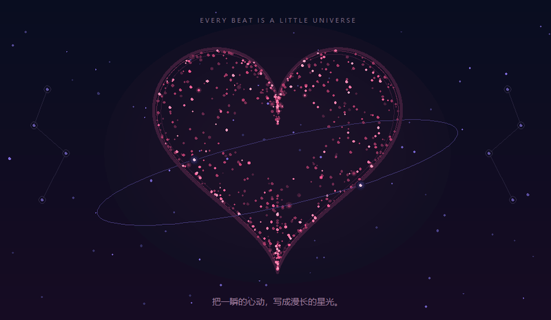

26 / EVERY BEAT, A LITTLE UNIVERSE
怦然，心动。
轻触，让星尘散开。
等一颗心慢慢回来。
星尘 · 心跳 · 再次相聚PARTICLE STUDY / 26

正在准备星尘，也可以先欣赏静态预览。
680 粒星尘点击或轻触散开，星尘会重新聚成爱心。手机上滑动可浏览页面；开启减少动态后，点击切换静态散开与聚合。
SCATTER, AND FIND EACH OTHER AGAIN
散开之后，还会再次相遇。
同一群星尘沿着固定轨迹散开，又回到心形轮廓。明暗来自粒子的深浅，双拍节奏让心跳有轻重。试试冰蓝色的慢心跳，或把繁星停在半空。
键盘、播放与保存
Tab 可访问所有控制。画布聚焦时，Enter 散开星尘，Space 播放或暂停，C 换色，R 重置。快捷键不会影响选择框和滑块。
首次打开保持静态。主动播放或散开后开始心跳；切换到其他页面会停止绘制，返回后保持原有播放或暂停状态。重置画面会暂停，并保留所选配色、速度和密度。
减少动态开启后，点击在静态散开与聚合之间切换；关闭后仍保持暂停。保存 PNG 捕获当前画面，不改变播放状态。连续点击会重新开始散开，不会增加粒子数量。